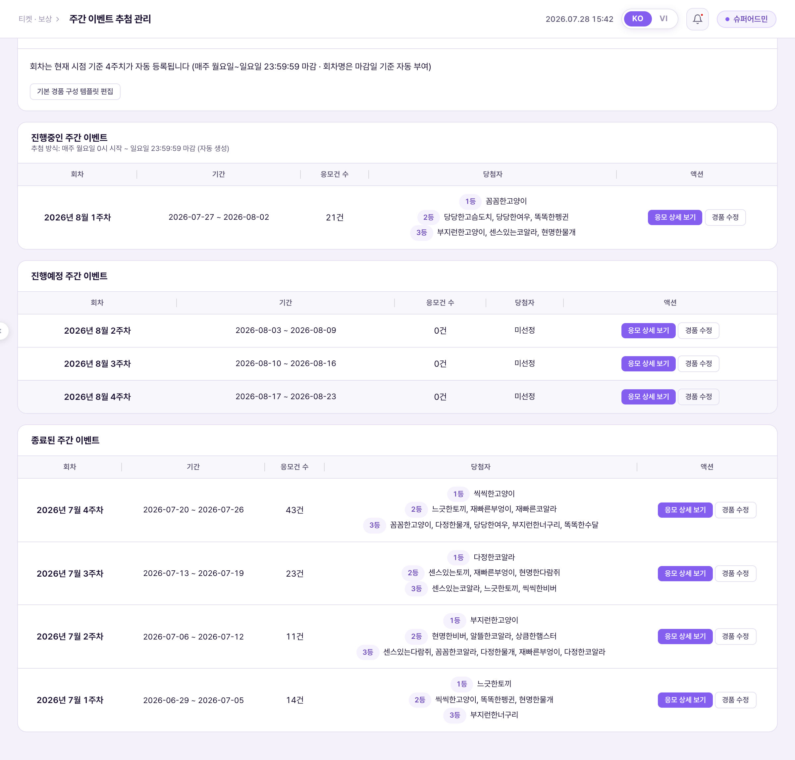
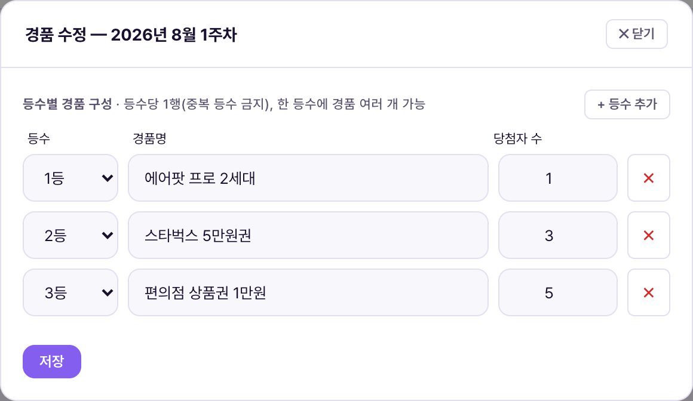
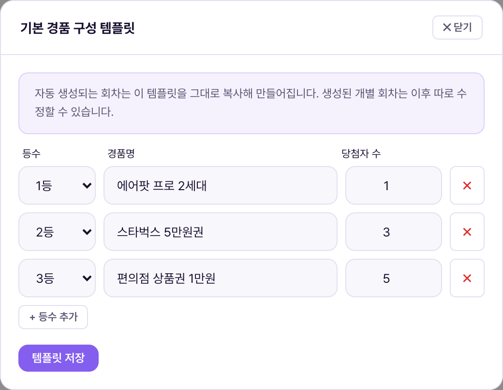
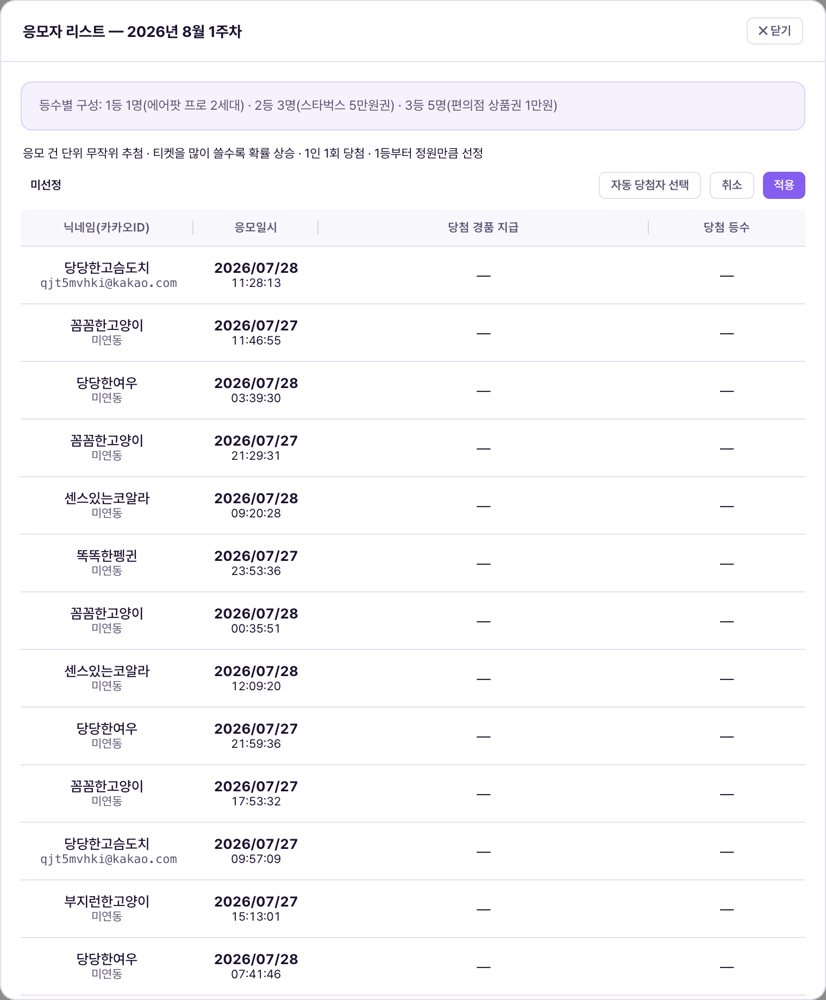
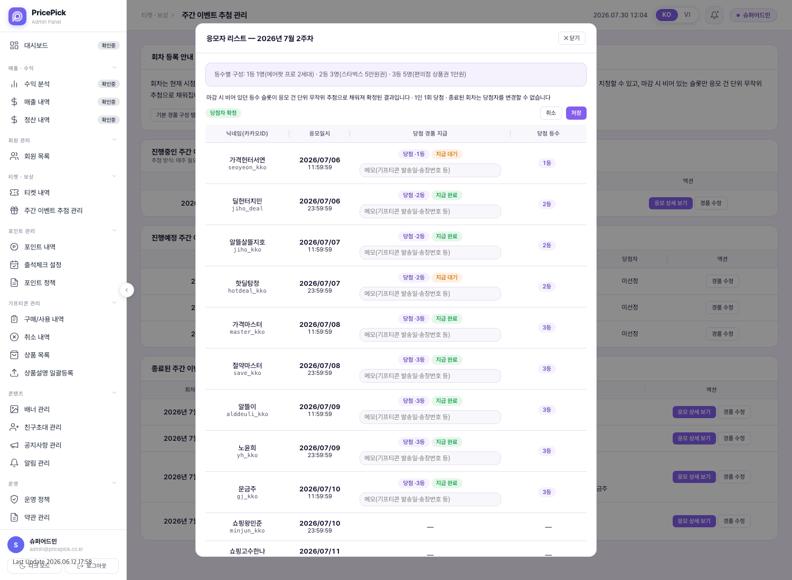
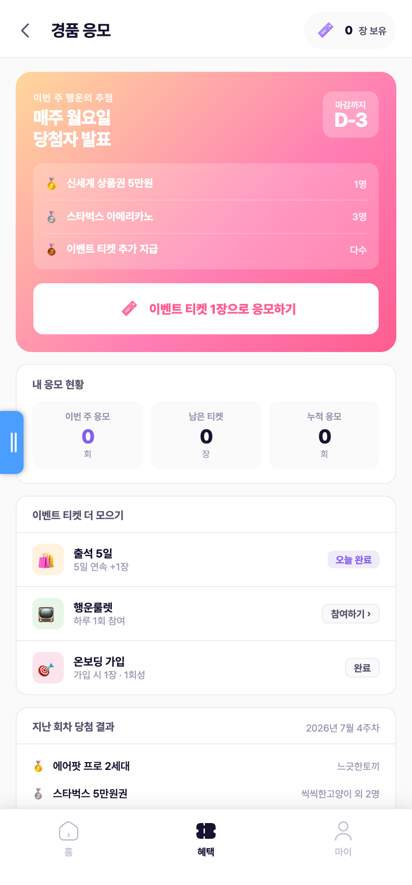

주간 이벤트 추첨 관리는 이벤트 티켓을 쓴 응모 건을 모아 매주 경품을 추첨하는 화면이다. 회차(한 주 단위 추첨 단위) 등록은 운영자가 손대지 않아도 시스템이 자동으로 처리한다. 당첨자는 진행 중인 회차에서 운영자가 등수 슬롯별로 직접 지정할 수 있고, 마감 시점에 비어 있는 슬롯만 시스템이 무작위로 채운다. 운영자는 회차별 경품 구성을 다듬고, 필요하면 당첨자를 지정하고, 당첨자에게 경품을 보냈는지 기록한다. 예전에 나뉘어 있던 "추첨 관리" · "경품/응모 관리" · "주간 이벤트 추첨" 세 화면은 전부 이 화면 하나로 합쳐졌다.Quản lý rút thăm sự kiện tuần là màn hình gom các lượt dự thưởng bằng vé sự kiện lại và rút thăm quà mỗi tuần. Việc đăng ký đợt (đơn vị rút thăm theo tuần) do hệ thống tự động xử lý, Vận hành viên không cần can thiệp. Người trúng thì Vận hành viên có thể trực tiếp chỉ định theo từng suất hạng ở đợt đang diễn ra, và tại thời điểm đóng đợt hệ thống chỉ lấp ngẫu nhiên những suất còn trống. Vận hành viên chỉnh cấu hình quà từng đợt, chỉ định người trúng nếu cần, và ghi lại việc đã gửi quà cho người trúng hay chưa. Ba màn trước đây tách rời là "Quản lý bốc thăm" · "Quản lý quà tặng/ứng tuyển" · "Bốc thăm sự kiện hàng tuần" nay đã gộp thành một màn duy nhất này.
좌측 메뉴 "티켓 · 보상" 그룹 안에 주간 이벤트 추첨 관리 하나만 있다. 예전에 있던 "추첨 관리" · "경품/응모 관리" 메뉴는 이 화면으로 통합되면서 사라졌고, 관련 없는 "이벤트 관리" 메뉴(실제로 쓰인 적 없는 화면)도 함께 정리됐다.Trong nhóm "Vé · Thưởng" ở menu bên trái chỉ có duy nhất mục Quản lý rút thăm sự kiện tuần. Các menu "Quản lý bốc thăm" · "Quản lý quà tặng/ứng tuyển" trước đây đã biến mất do gộp vào màn này, và menu không liên quan "Quản lý sự kiện" (màn chưa từng được dùng thực tế) cũng đã được dọn cùng.
회차는 운영자가 만들거나 지우는 기능이 없다. 화면을 열 때마다 시스템이 "오늘 기준 앞으로 4주치" 회차가 다 채워져 있는지 확인하고, 부족한 만큼 자동으로 새로 만든다. 그래서 언제 접속해도 진행 중인 주를 포함해 항상 4주치 회차가 존재한다. 한 회차는 월요일 0시 시작 ~ 일요일 23:59:59 마감으로 고정이며, 회차명은 마감일(=추첨일) 기준으로 "2026년 7월 4주차"처럼 자동으로 붙는다. 당첨자는 마감 시점에 비어 있는 등수 슬롯만 자동으로 채워진다 — 진행 중에 운영자가 지정해 둔 슬롯은 그대로 유지된다(자세한 조건은 5번 참고).Không có chức năng để Vận hành viên tự tạo hoặc xóa đợt. Mỗi khi mở màn hình, hệ thống sẽ kiểm tra xem "4 tuần tính từ hôm nay" đã có đủ đợt chưa, và tự tạo thêm phần còn thiếu. Vì vậy dù truy cập lúc nào cũng luôn có sẵn 4 tuần đợt, kể cả tuần đang diễn ra. Một đợt cố định bắt đầu 0h Thứ Hai ~ đóng 23:59:59 Chủ Nhật, và tên đợt được tự động gắn theo ngày đóng (=ngày rút thăm), ví dụ "Tuần 4 tháng 7 năm 2026". Người trúng chỉ được lấp tự động ở những suất hạng còn trống tại thời điểm đóng đợt — các suất Vận hành viên đã chỉ định trong lúc đợt đang diễn ra vẫn được giữ nguyên (điều kiện chi tiết xem mục 5).
회차 리스트는 상태별로 3개 구역으로 나뉜다.Danh sách đợt được chia thành 3 khu vực theo trạng thái.
| 구역Khu vực | 내용Nội dung |
|---|---|
| 진행중인 주간 이벤트Sự kiện tuần đang diễn ra | 오늘이 속한 회차 1개. 항상 리스트 맨 위1 đợt chứa ngày hôm nay. Luôn ở trên cùng danh sách |
| 진행예정 주간 이벤트Sự kiện tuần sắp diễn ra | 아직 시작 전인 이후 회차들(보통 3개). 응모가 아직 0건이라 "응모 상세 보기" 버튼은 없고 "경품 수정"만 있다Các đợt sau đó chưa bắt đầu (thường 3 đợt). Vì chưa có lượt dự thưởng nào nên không có nút "Xem chi tiết dự thưởng", chỉ có "Chỉnh sửa giải thưởng" |
| 종료된 주간 이벤트Sự kiện tuần đã kết thúc | 마감이 지난 회차. 최신 회차가 위로 오도록 정렬Đợt đã qua hạn đóng. Sắp xếp đợt mới nhất lên trên |
각 회차 행의 "응모건 수"는 그 회차에 이벤트 티켓이 쓰인 횟수다(뒤에서 설명하듯 티켓 1장 = 응모 1건이므로, 같은 사람이 여러 장 쓰면 그만큼 건수도 늘어난다). "당첨자"는 당첨자가 확정된 회차에만 등수별로 뜨고, 아직이면 "미선정"으로 표시된다."Số lượt dự thưởng" ở mỗi dòng đợt là số lần vé sự kiện được dùng trong đợt đó (vé 1 = dự thưởng 1 lượt như giải thích ở phần sau, nên 1 người dùng nhiều vé thì số lượt cũng tăng theo). "Người trúng" chỉ hiện theo hạng ở đợt đã chốt người trúng, còn chưa thì hiện "Chưa chọn".

회차별 "경품 수정" 버튼을 누르면 그 회차의 등수별 경품만 고칠 수 있다. 회차명·기간은 자동 등록 규칙으로 고정돼 있어 이 모달에서 바꿀 수 없다 — 등수, 경품명, 당첨자 수(=그 등수에 몇 명 뽑을지)만 입력한다. 새로 자동 생성되는 회차는 "기본 경품 구성 템플릿"을 그대로 복사해서 만들어지며, 이 템플릿은 화면 상단 "기본 경품 구성 템플릿 편집" 버튼에서 미리 정해둔다. 템플릿을 바꿔도 이미 만들어진 회차에는 영향이 없고, 그 이후 새로 생기는 회차부터 적용된다.Bấm nút "Chỉnh sửa giải thưởng" ở từng đợt để chỉ sửa quà theo hạng của đợt đó. Tên đợt·thời gian đã cố định theo quy tắc đăng ký tự động nên không sửa được trong modal này — chỉ nhập hạng, tên quà, số người trúng (=chọn bao nhiêu người ở hạng đó). Đợt mới được tạo tự động sẽ sao chép nguyên "Mẫu cấu hình quà mặc định", mẫu này được đặt trước ở nút "Sửa mẫu cấu hình quà mặc định" phía trên màn hình. Đổi mẫu không ảnh hưởng đợt đã tạo, chỉ áp dụng cho đợt tạo sau đó.


회차 행의 "응모 상세 보기"를 누르면 그 회차에 응모한 사람들이 뜬다. 이 버튼은 진행중·종료된 회차 행에만 있다 — 진행예정 회차는 아직 응모가 0건이라 볼 게 없어서 버튼 자체를 빼놨다. 표기는 닉네임과 카카오 아이디 두 줄뿐이다(내부 식별 아이디 같은 건 안 보여준다). 응모일시는 날짜와 시각까지 함께 나온다. 컬럼은 닉네임(카카오ID) · 응모일시 · 당첨 등수 3개다 — 당첨 등수 칸 하나에 등수 뱃지(진행 중 회차는 등수 지정 드롭다운)와 그 등수에 걸린 경품명, 지급 상태 뱃지, 메모칸이 한 줄로 들어간다. 경품명은 그 회차의 등수별 경품 구성에서 그대로 읽어오므로 "경품 수정"에서 경품을 바꾸면 이 표기도 따라 바뀐다. 리스트 위 툴바도 한 줄이다 — 검색창, 응모 건수, 상태 뱃지, 안내 (i) 버튼이 왼쪽에 붙고 취소·저장이 오른쪽에 붙는다. 긴 안내 문구는 (i)를 누르면 그 아래로 펼쳐진다(마우스만 올려도 전문이 뜬다).Bấm "Xem chi tiết dự thưởng" ở dòng đợt để xem người đã dự thưởng đợt đó. Nút này chỉ có ở dòng đợt đang diễn ra·đã kết thúc — đợt sắp diễn ra chưa có lượt dự thưởng nào nên đã bỏ hẳn nút này. Chỉ hiển thị 2 dòng biệt danh và Kakao ID (không hiện ID định danh nội bộ). Thời điểm dự thưởng hiện cả ngày lẫn giờ. Bảng có 3 cột: Biệt danh (Kakao ID) · Thời điểm dự thưởng · Hạng trúng thưởng — riêng ô Hạng trúng thưởng chứa gọn trên một dòng: badge hạng (đợt đang diễn ra thì là dropdown chỉ định hạng), tên quà gắn với hạng đó, badge trạng thái gửi quà và ô ghi chú. Tên quà được đọc thẳng từ cấu hình quà theo hạng của đợt đó, nên đổi quà ở "Chỉnh sửa giải thưởng" thì phần hiển thị này cũng đổi theo. Thanh công cụ phía trên danh sách cũng gói trong một dòng — ô tìm kiếm, số lượt dự thưởng, badge trạng thái và nút hướng dẫn (i) nằm bên trái, Hủy·Lưu nằm bên phải. Nội dung hướng dẫn dài sẽ bung ra bên dưới khi bấm (i) (chỉ rê chuột cũng hiện đầy đủ).
이벤트 티켓 1장을 쓴 게 응모 1건이고, 리스트도 1행이다. 그래서 한 사람이 티켓을 3장 썼으면 그 사람 이름으로 3행이 나란히 뜬다 — 한 사람이 여러 번 응모할 수 있다는 뜻이다. 당첨자 추첨도 이 응모 "행" 단위로 진행되기 때문에, 같은 사람이라도 쓴 티켓이 많을수록(=응모 행이 많을수록) 당첨 확률이 그만큼 비례해서 올라간다.Dùng 1 vé sự kiện = 1 lượt dự thưởng = 1 dòng trong danh sách. Vậy nếu 1 người dùng 3 vé thì tên người đó xuất hiện liền 3 dòng — nghĩa là 1 người có thể dự thưởng nhiều lần. Rút thăm người trúng cũng tiến hành theo đơn vị "dòng" dự thưởng này, nên dù cùng 1 người, dùng càng nhiều vé (=càng nhiều dòng dự thưởng) thì xác suất trúng càng tăng theo tỷ lệ.
진행 중인 회차를 열면 각 응모 행의 "당첨 등수" 칸이 드롭다운으로 나온다. 그 회차 경품 구성에 있는 등수만 선택지로 뜨고("미선택" 포함), 등수를 고르면 그 행이 그 등수 슬롯의 당첨자가 된다. 두 가지는 화면에서 바로 막는다 — 등수별 정원을 넘겨 지정할 수 없고("해당 등수의 슬롯이 이미 모두 찼습니다."), 같은 사람을 두 번 지정할 수 없다("이미 다른 응모 건으로 당첨 처리된 응모자입니다"). 지정은 상단 "저장"을 눌러야 확정되며, 저장 전에는 상태 뱃지가 "저장 전 (임시 지정)"으로 뜬다. 저장 후에도 마감 전이면 언제든 다른 행으로 바꾸거나 "미선택"으로 되돌려 해제할 수 있다.Khi mở đợt đang diễn ra, cột "Hạng trúng thưởng" của mỗi dòng dự thưởng hiện dưới dạng danh sách chọn (dropdown). Chỉ các hạng có trong cấu hình quà của đợt đó xuất hiện làm lựa chọn (kèm "Chưa chọn"), chọn một hạng thì dòng đó thành người trúng của suất hạng ấy. Hai điều bị chặn ngay trên màn hình — không chỉ định vượt số lượng của từng hạng ("Các suất của hạng này đã đầy.") và không chỉ định cùng một người hai lần ("Người này đã được chọn trúng thưởng ở một lượt dự thưởng khác"). Chỉ định chỉ được chốt khi bấm "Lưu" phía trên; trước khi lưu, badge trạng thái hiện "Trước khi lưu (chỉ định tạm)". Sau khi lưu, nếu vẫn chưa đóng đợt thì lúc nào cũng có thể đổi sang dòng khác hoặc đưa về "Chưa chọn" để huỷ chỉ định.
마감 시각이 되면 시스템이 비어 있는 슬롯만 채운다. 수동 지정된 사람을 뺀 나머지 응모 행을 전부 무작위로 섞은 뒤, 등수별로 남은 자리만큼 1등부터 순서대로 채우고, 같은 사람이 두 번 당첨되는 일은 막는다(이미 당첨된 사람의 다른 응모 행은 건너뜀). 이렇게 확정된 뒤에는 운영자가 당첨자를 바꿀 수 없다 — 종료된 회차의 "당첨 등수" 칸은 드롭다운이 아니라 결과 뱃지로만 보인다. 데모 환경에는 서버 크론이 없어서, 실제로는 CMS 화면을 여는 시점에 "마감은 지났는데 아직 추첨 안 된 회차"가 있는지 확인해 그 자리에서 대신 처리한다(운영자 눈에는 차이가 없다).Khi đến giờ đóng đợt, hệ thống chỉ lấp những suất còn trống. Hệ thống xáo trộn ngẫu nhiên toàn bộ dòng dự thưởng còn lại sau khi trừ người đã được chỉ định thủ công, rồi lấp đúng số chỗ còn thiếu của từng hạng theo thứ tự từ hạng 1, đồng thời chặn việc 1 người trúng hai lần (bỏ qua các dòng dự thưởng khác của người đã trúng). Sau khi đã chốt như vậy thì Vận hành viên không thể đổi người trúng — cột "Hạng trúng thưởng" của đợt đã kết thúc chỉ hiện badge kết quả, không phải dropdown. Vì môi trường demo không có cron server, trên thực tế hệ thống kiểm tra vào lúc mở màn CMS xem có đợt nào "đã đóng nhưng chưa rút thăm" không rồi xử lý thay ngay lúc đó (Vận hành viên nhìn thấy không khác gì nhau).
당첨으로 뽑힌 응모 행에는 "당첨 · N등" 뱃지가 붙고, 이런 행들은 등수 순서로 리스트 맨 위에 모인다. 회차 리스트의 "당첨자" 칸에서는 운영자가 직접 지정한 당첨자 뒤에 "(수동)" 표시가 붙어 자동 추첨분과 구분된다.Dòng dự thưởng được chọn trúng sẽ có badge "Trúng thưởng · Hạng N", và các dòng này được gom lên đầu danh sách theo thứ tự hạng. Ở cột "Người trúng" của danh sách đợt, người trúng do Vận hành viên trực tiếp chỉ định sẽ có thêm ký hiệu "(thủ công)" để phân biệt với phần rút thăm tự động.
응모자가 많은 회차를 대비해 리스트 위에 닉네임 검색창이 있고, 리스트는 10건씩 페이지로 나뉜다. 검색은 닉네임과 카카오 아이디를 둘 다 부분 일치로 잡는다(대소문자 구분 없음) — "지민"만 쳐도 "딜헌터지민"이 걸린다. 검색창 오른쪽에는 전체 응모 건수가 항상 떠 있고, 검색 중에는 "검색 결과 N / 전체 응모 건수 M" 형태로 둘 다 보여준다(총계는 티켓 1장 = 1행 기준 그대로다). 정렬 규칙은 검색·페이지와 무관하게 그대로다 — 당첨자를 등수 순으로 먼저 세우고 그 뒤에 나머지를 붙인 순서를 정해놓고 그 순서 그대로 10건씩 끊기 때문에, 1페이지 맨 위는 항상 1등이다. 당첨 뱃지·지급 상태 뱃지·메모칸도 검색 결과 안에서 똑같이 눌리고 입력된다. 검색어를 바꾸면 1페이지로 돌아가고, 모달을 닫았다 다시 열면 검색어·페이지가 초기화된다. 10건 이하면 페이지 버튼은 아예 안 나온다.Để chuẩn bị cho các đợt có nhiều người dự thưởng, phía trên danh sách có ô tìm kiếm biệt danh, và danh sách được chia trang 10 dòng mỗi trang. Tìm kiếm khớp một phần cả biệt danh lẫn Kakao ID (không phân biệt hoa thường) — chỉ gõ "지민" cũng ra "딜헌터지민". Bên phải ô tìm kiếm luôn hiện tổng số lượt dự thưởng, khi đang tìm kiếm thì hiện cả hai theo dạng "Kết quả tìm kiếm N / Tổng số lượt dự thưởng M" (tổng số vẫn tính theo chuẩn 1 vé = 1 dòng như cũ). Quy tắc sắp xếp không đổi dù có tìm kiếm hay chia trang — xếp người trúng lên trước theo thứ tự hạng rồi mới nối phần còn lại, sau đó mới cắt 10 dòng mỗi trang theo đúng thứ tự đó, nên đầu trang 1 luôn là hạng 1. Badge trúng thưởng·badge trạng thái gửi quà·ô ghi chú trong kết quả tìm kiếm cũng bấm và nhập được y hệt. Đổi từ khóa thì quay về trang 1, đóng modal rồi mở lại thì từ khóa·trang được đặt lại. Nếu từ 10 dòng trở xuống thì nút chuyển trang không hiện.

당첨자가 확정된 응모 행에는 당첨 뱃지 옆에 지급 상태 뱃지가 나란히 붙는다 — 기본은 "지급 대기"이고, 뱃지를 클릭할 때마다 "지급 완료" ↔ "지급 대기"로 바뀐다. 같은 줄 오른쪽에는 한 줄짜리 자유 메모 칸이 붙어 있어 기프티콘 발송일이나 실물 경품 송장번호 같은 걸 적어둘 수 있다(칸보다 긴 메모는 마우스를 올리면 전체가 뜬다). 메모칸을 뱃지 아래로 펼치지 않고 옆에 붙인 건 한 페이지 10건이 모달 내부 스크롤 없이 다 보이게 하기 위해서다. 지급 상태와 메모는 상단 "저장" 버튼을 눌러야 저장된다 — 뱃지 클릭·메모 입력만으로는 임시 상태이고, 모달을 닫았다 다시 열면 마지막으로 저장된 상태로 돌아간다.Dòng dự thưởng đã chốt người trúng sẽ có badge trạng thái gửi quà đặt cạnh badge trúng thưởng — mặc định "Chờ gửi quà", mỗi lần bấm vào badge sẽ đổi qua lại "Đã gửi quà" ↔ "Chờ gửi quà". Bên phải cùng dòng đó có ô ghi chú tự do một dòng để ghi ngày gửi Gifticon hoặc mã vận đơn quà vật lý (ghi chú dài hơn ô thì rê chuột vào sẽ hiện đầy đủ). Sở dĩ đặt ô ghi chú bên cạnh chứ không trải xuống dưới badge là để 10 dòng của một trang hiện hết mà không phải cuộn bên trong modal. Trạng thái gửi quà và ghi chú chỉ lưu khi bấm nút "Lưu" phía trên — chỉ bấm badge/nhập ghi chú thôi vẫn là trạng thái tạm, đóng modal rồi mở lại sẽ trở về trạng thái đã lưu gần nhất.
단, 위 내용은 종료된 회차에만 해당한다. 진행 중인 회차에서는 지급 관련 표기가 아예 나오지 않는다 — 지급 상태 뱃지도, 메모칸도 없다. 진행 중에는 경품을 지급하지 않기 때문이다 — 지급은 회차가 종료된 뒤에 한다. 그래서 진행 중 회차의 "당첨 등수" 칸에는 수동 지정 드롭다운과 그 등수의 경품명만 들어간다. 왜 안 보이는지는 툴바의 ⓘ 버튼으로 알려준다 — 마우스를 올리면 툴팁으로, 누르면 안내가 펼쳐지며 둘째 줄에 "지급 상태·메모는 아직 지급이 성립하지 않는 구간이라 표시하지 않습니다 — 회차 종료 후 이 리스트에 함께 나타납니다"가 나온다. 진행 중인 회차에서 운영자가 할 수 있는 일은 당첨자 수동 지정까지다.Tuy nhiên, nội dung trên chỉ áp dụng cho đợt đã kết thúc. Ở đợt đang diễn ra, hoàn toàn không hiện phần liên quan đến gửi quà — không có badge trạng thái gửi quà, cũng không có ô ghi chú. Vì trong lúc đợt đang diễn ra thì không gửi quà — việc gửi quà chỉ làm sau khi đợt kết thúc. Do đó ở đợt đang diễn ra, cột "Hạng trúng thưởng" chỉ có dropdown chỉ định thủ công và tên quà của hạng đó. Lý do không hiện được thông báo qua nút ⓘ trên thanh công cụ — rê chuột vào thì hiện tooltip, bấm vào thì phần hướng dẫn mở ra và dòng thứ hai ghi "Trạng thái gửi quà·ghi chú không được hiển thị vì chưa tới lúc phát sinh việc gửi quà — sẽ xuất hiện trong danh sách này sau khi đợt kết thúc". Ở đợt đang diễn ra, việc Vận hành viên làm được chỉ đến mức chỉ định người trúng thủ công.
이 화면은 "보냈는지 아닌지"와 메모만 남기는 최소 기능이다. 기프티콘을 실제로 자동 발송하거나, 당첨자의 배송지·연락처 같은 수령 정보를 입력받는 화면은 따로 없다 — 수령 정보가 필요하면 1:1 문의를 통해 운영자가 직접 받는다.Màn này chỉ có chức năng tối thiểu để ghi lại "đã gửi hay chưa" và ghi chú. Không có màn tự động gửi Gifticon thật, hay màn nhập thông tin nhận quà (địa chỉ, số điện thoại...) của người trúng — nếu cần thông tin nhận quà thì Vận hành viên nhận trực tiếp qua Hỏi đáp 1:1.

앱으로 나가는 효과는 회차가 마감돼 당첨자가 확정되는 순간에만 생긴다. 진행 중에 수동으로 지정해 둔 것만으로는 앱에 아무 변화가 없다 — 마감 전까지는 당첨 알림도, 명단 노출도 없다.Các hiệu ứng ra phía app chỉ xảy ra ngay khi đợt đóng và người trúng được chốt. Chỉ chỉ định thủ công trong lúc đợt đang diễn ra thì app không thay đổi gì — trước khi đóng đợt sẽ không có thông báo trúng thưởng, cũng không hiện danh sách.
| 효과Hiệu ứng | 내용Nội dung |
|---|---|
| 당첨 알림 발송Gửi thông báo trúng thưởng | 당첨된 회원의 앱 알림함(이벤트 탭)에 "경품 추첨에 당첨되셨어요!" 알림이 자동으로 뜬다. 문구는 알림 문구표의 PRIZE_WIN 항목을 그대로 쓴다.Thông báo "Bạn đã trúng thưởng bốc thăm quà!" tự động hiện trong hộp thông báo (tab sự kiện) của thành viên trúng thưởng. Nội dung dùng nguyên văn mục PRIZE_WIN trong bảng nội dung thông báo. |
| 지난 회차 당첨자 명단 노출Hiện danh sách người trúng đợt trước | 앱의 "경품 응모" 화면(혜택 탭)에 가장 최근 마감·추첨된 회차의 당첨자 명단이 뜬다. 회차명·등수·경품명·닉네임만 보이고, 카카오ID 같은 개인정보는 노출되지 않는다.Màn "Ứng tuyển quà" của app (tab lợi ích) hiện danh sách người trúng của đợt đóng·rút thăm gần nhất. Chỉ hiện tên đợt·hạng·tên quà·biệt danh, không lộ thông tin cá nhân như Kakao ID. |
둘 다 CMS 화면에서 별도로 켜고 끄는 설정이 없다 — 당첨자가 확정되면 항상 같이 일어나는 동작이다.Cả hai đều không có cài đặt bật/tắt riêng trên CMS — đây là hành vi luôn xảy ra cùng lúc khi người trúng được chốt.
비당첨자에게는 별도 알림을 보내지 않는다(2026-07-30 확정). "회차가 마감됐다"는 알림은 없고, 낙첨 사실을 따로 통보하지도 않는다 — 결과는 위의 지난 회차 당첨자 명단으로만 확인한다. 당첨자 쪽도 알림을 읽는 것이 전부이고, 알림을 눌러 들어가는 당첨 상세 화면은 없다.Không gửi thông báo riêng cho người không trúng (chốt 30/07/2026). Không có thông báo kiểu "đợt đã đóng", cũng không thông báo riêng việc không trúng — kết quả chỉ xem qua danh sách người trúng đợt trước ở trên. Phía người trúng cũng chỉ đọc thông báo là hết, không có màn chi tiết trúng thưởng để bấm vào.

| 상황Tình huống | 운영자가 하는 일Việc Vận hành viên làm | 결과Kết quả |
|---|---|---|
| 특정 회원을 당첨자로 지정Chỉ định một thành viên làm người trúng | 진행 중인 회차의 "응모 상세 보기"를 열어 그 회원의 응모 행에서 "당첨 등수" 드롭다운으로 등수를 고르고 "저장"Mở "Xem chi tiết dự thưởng" của đợt đang diễn ra, chọn hạng ở dropdown "Hạng trúng thưởng" tại dòng dự thưởng của thành viên đó rồi bấm "Lưu" | 그 슬롯은 확정되고 남은 슬롯만 마감 시 무작위 추첨으로 채워진다. 마감 전까지 변경·해제 가능하며, 앱에는 마감 전까지 아무것도 노출되지 않음. 이 단계에서는 지급 상태·메모가 화면에 없음(마감 후 등장)Suất đó được chốt và chỉ các suất còn lại được rút thăm ngẫu nhiên khi đóng đợt. Có thể thay đổi·huỷ cho đến khi đóng đợt, và app không hiện gì cho đến khi đóng đợt. Ở bước này trạng thái gửi quà·ghi chú không có trên màn hình (xuất hiện sau khi đóng đợt) |
| 이번 주 당첨자 확인Xem người trúng tuần này | 마감된 회차의 "응모 상세 보기"를 열어 확정된 결과를 확인만 한다 — 종료 회차에서는 당첨자를 바꿀 수 없다Chỉ mở "Xem chi tiết dự thưởng" của đợt đã đóng để xem kết quả đã chốt — với đợt đã kết thúc thì không đổi được người trúng | 당첨자가 등수 순으로 리스트 맨 위에 표시되고, 회차 리스트의 "당첨자" 칸에도 등수별로 표시됨(수동 지정분에는 "(수동)" 표시)Người trúng hiện ở đầu danh sách theo thứ tự hạng, và cột "Người trúng" ở danh sách đợt cũng hiện theo hạng (phần chỉ định thủ công có ký hiệu "(thủ công)") |
| 특정 회원이 응모했는지 확인Kiểm tra một thành viên có dự thưởng không | "응모 상세 보기"를 연 뒤 리스트 위 검색창에 닉네임이나 카카오 아이디 일부를 입력한다 (문의 답변용으로 쓰는 경우가 많다)Mở "Xem chi tiết dự thưởng" rồi nhập một phần biệt danh hoặc Kakao ID vào ô tìm kiếm phía trên danh sách (thường dùng để trả lời hỏi đáp) | 그 회원의 응모 행만 남는다 — 몇 건 응모했는지(=티켓을 몇 장 썼는지), 당첨됐는지까지 한 번에 보인다Chỉ còn lại các dòng dự thưởng của thành viên đó — thấy ngay đã dự thưởng bao nhiêu lượt (=dùng bao nhiêu vé) và có trúng thưởng hay không |
| 경품 발송 완료 표시Đánh dấu đã gửi quà | 해당 당첨자의 지급 상태 뱃지를 눌러 "지급 완료"로, 메모칸에 발송일 등 입력 → "저장"Bấm badge trạng thái gửi quà của người trúng đó sang "Đã gửi quà", nhập ngày gửi v.v. vào ô ghi chú → "Lưu" | 다음에 리스트를 열어도 지급 완료 상태와 메모가 그대로 남아 있음Lần sau mở lại danh sách vẫn giữ nguyên trạng thái đã gửi và ghi chú |
| 이번 달 경품을 바꾸고 싶을 때Khi muốn đổi quà tháng này | "기본 경품 구성 템플릿 편집"에서 템플릿을 바꾸거나, 이미 생성된 특정 회차만 "경품 수정"으로 개별 변경Đổi mẫu ở "Sửa mẫu cấu hình quà mặc định", hoặc chỉ đổi riêng 1 đợt đã tạo qua "Chỉnh sửa giải thưởng" | 템플릿 변경은 이후 새로 생기는 회차부터, 개별 수정은 그 회차에만 적용Đổi mẫu áp dụng từ đợt tạo sau đó, sửa riêng chỉ áp dụng cho đợt đó |